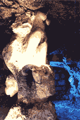
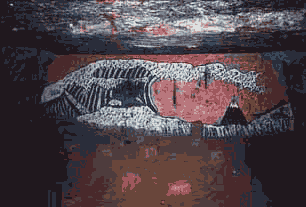
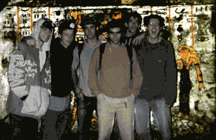
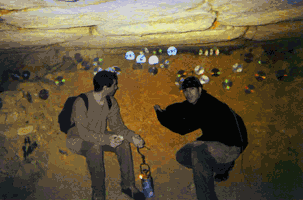
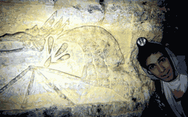
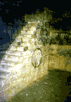
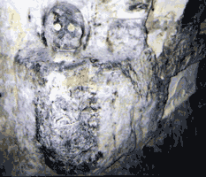
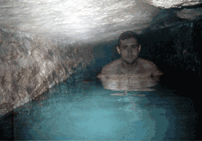
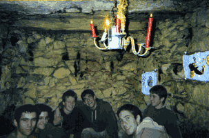
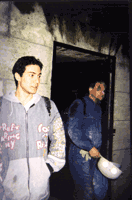

Quelques mots sur les catacombes de Paris...
Informations légales
Un peu d'historique
Les endroits cools
La salle du bélier
La plage
La chambre Egyptienne
La salle des CD
La salle du dragon
Le cabinet minéralogique
La crypte
La piscine
La salle du chandelier
La salle Z
Le bunker allemand
y'a des flics cools aussi...
Des liens sympas
Informations légales
Arrêté du 2 novembre 1955Art.1. Il est interdit à toute personne non munie d'une autorisation émanant de l'Inspection Générale des Carrières d'ouvrir les portes et trappes d'accès aux escaliers et puits à échelons ou autres des anciennes carrières, de descendre dans ces ouvrages, de pénétrer et de circuler dans les vides des anciennes carrières s'étendant sous l'emprise des voies publiques de la Ville de Paris.
Art.2. Les contraventions au present arrêté seront constatées par procès verbaux des commissaires de police et autres officiers de police judiciaire et des agents de l'Inspection Générale des Carrières ayant qualité pour verbaliser. Elles seront déférées aux tribunaux compétents.
Art.3. Le directeur de la police municipale et l'Ingénieur Général des Mines, Inspecteur Général des Carrières de la Seine sont chargés de l'exécution du present arrêté qui sera inséré au recueil des actes administratifs et affiché dans Paris.
Fait à Paris, le 2 novembre 1955, Le Prefet de Police: signé Dubois.retour en haut de la page
Un peu d'historique
Les différentes phases d'expansion de Paris ont recquis tout au long de son histoire l'exploitation de carrières locales. Au début (à l'époque romaine), il ne s'agissait bien sur que de carrières à ciel ouvert. Il faut attendre l'avènement des Capétiens et donc un nouvel essor de la construction, Hugues Capet ayant fait de Paris la nouvelle capitale de son royaume, pour voir les premières carrières souterraines apparaître. L'exploitation prit une dimension quasi-industrielle dès les XIIème et XIIIème siècles, notamment pour la construction, sous Philippe Auguste, des remparts protégeant la cité, de Notre-Dame, de la forteresse royale du Louvre (dont on peut encore admirer les fondations) et des Halles. C'est de cette période que datent par exemple les carrières du Val de Grâce (et donc de la salle Z).
Les vides ainsi créés dans le sous-sol furent peu à peu oubliés: les puits d'extraction seront comblés pour éviter les accidents ou seront utilisés comme décharges. Ce n'est qu'au XVIIIème siècle, après une série d'effondrements (fontis) que les autorités prendront conscience du danger latent que représente le sous-sol parisien. Le 4 Avril 1777 est créée l'Inspection Générale des Carrières, chargée (encore aujourd'hui) de répertorier et de consolider les carrières de la capitale.
Les équipes de l'IGC vont durant plus de 200 ans faire des souterrains parisiens l'un des ensembles architecturaux les plus importants de France, et leur donner l'aspect que nous leur connaissons maintenant. Il est relativement rare actuellement de trouver un front de taille antérieur au XVIIIème siècle. D'une façon générale, seuls les plafonds sont d'origine. Certains n'hésitent pas à voir dans les consolidations établies par Guillaumot, qui fut le premier inspecteur général des carrières, Héricart de Thury et Trémery, autre chose que le souci du travail bien fait et l'application des normes architecturales.
Un architecte de renom a également laissé sa marque dans les carrières: il s'agit de Mansard. Il fut chargé par la reine, Anne d'Autriche, de construire une église et une abbaye (pour remercier le ciel de la naissance du Dauphin, le futur Louis XIV) que l'on nomma dès lors Val-de-Grâce. En creusant pour établir les fondations du futur bâtiment, Mansard découvrit les vides incroyables du sous-sol et dût les consolider avant d'entreprendre quoi que ce fût. Ces travaux, étant donnée leur importance, prirent du temps et de l'argent. S'étonnant du faible avancement des travaux, la reine fit remplacer Mansard, alors qu'il venait d'achever la construction du premier étage. C'est la raison pour laquelle certains disent que les plus belles réalisations de Mansard au Val-de-Grâce se trouvent sous terre.
Les ossements que l'on trouve dans les carrières sont bien postérieurs à tous ces travaux, puisque les premiers transferts datent de la fin du XVIIIème siècle.
Il reste actuellement 770 hectares de vides résultants de ces anciennes exploitations, soit un volume de six millions de mètres cubes. Les galeries peuvent être de deux types. En effet, l'IGC ne prend en charge que la consolidation des galeries sous le domaine public. La consolidation des vides sous les propriétés privées est du ressort des propriétaires. Il y a d'abord 135 kilomètres de galeries d'inspection: 91 sous les rues et 44 sous les jardins et autres bâtiments publics. Ces galeries sont donc régulierement inspectées par l'IGC. De plus, 150 kilomètres de galeries subsistent sous les domaines privés. Au total, presque 300 kilomètres, soit deux fois plus que les lignes de métro.
Les galeries d'inspection se trouvent principalement sous la rive gauche:- Grand réseau du XIVe arrondissement (XIVe, Xve nord, Ve, VIe): 100 kilomètres
- XIIIe arrondissement: 25 kilomètres
- XVIe arrondissement (carrières de Chaillot, réseaux de Passy): 7 kilomètres
- XIIe arrondissement: 200 mètres
Sinon, je recommande le (très complet et richement illustré) livre de Patrick SALETTA: "A la découverte des souterrains de PARIS" aux edition SIDES
retour en haut de la page
Les endroits cools du grand réseau du sud au nord (enfin, à peu près)
La salle du bélier
Au bout de l'autoroute du sud et pas loin de quelques puits d'ossements, cette salle à bien l'aspect chaotique du sud du réseau (en théorie, on ne se cogne pas trop la tête par là mais gare aux dérapages au niveau des concrétions). C'est une petite salle assez agréable où on peut facilement tenir à une quinzaine de personnes.
Ce qui donne son charme à cette salle, c'est l'ambiance qui y règne. Des bancs de pierre permettent de s'y installer en "U" ce qui fait qu'on a plein de voisins avec qui rigoler. La décoration de cette salle est assez impressionnante et on y trouve des sculptures représentant une tête de bélier (d'où le nom !!), un corps de femme ainsi que d'autres formes auxquelles je ne saurais donner un nom (on n'aura qu'à dire des têtes de monstres). On y trouve aussi quelques mosaïques.
Ma première visite dans cette salle remonte à la soirée d'haloween en l'an 2000 où les forces de l'ordre nous ayant interpellés un peu après la salle egyptienne (nous ne sommes pas allés très loin ce soir là...), nous avons décidé de rebrousser chemin vers le sud. S'en est suivie une très longue soirée bien sympathique (des gens cools, guitare et narghileh). Ce soir là, il y avait même un camescope; si ça se trouve, un jour ou l'autre, il y aura un montage...
retour en haut de la page
La plage
C'est ce qu'on peut appeler un classique. Elle tient son nom du sable qui recouvre le sol et qui est issue des restes de traveaux de remblayage, et du coup, ça a donné l'idée à je ne sais qui de peindre une fresque représentant une vague (comme sur la photo). C'est une salle assez grande avec plusieurs pièces. Il y a plusieurs entrées (une côté Voie verte et une côté reservoir).
Nous, on n'y va pas trop souvent mais ça me fait toujours marrer quand je repense à Kevin qui s'explose le crâne sur des éléments de fer accrochés au plafond. A part ça, c'est rigolo de s'y perdre en essayant d'aller d'une entrée à l'autre mais je ne pense pas que ça puisse occuper toute une soirée.
On y trouve souvent des cataphiles qui font là la première ou la dernière halte (personnellement, je préfère la salle egyptienne pour ça mais il n'y a pas vraiment de raison). Quand on passe devant, on voit souvent des sacs poubelle remplis, témoins des soirées qui s'y déroulent.
retour en haut de la page
La chambre Egyptienne
En voilà une salle qu'elle est sympa... Chez nous, c'est souvent le premier squat. Situé à une trentaine de mètres de la plage, elle permet de reprendre son souffle avant de se lancer dans les quelques galeries très sportives (c'est un avis personnel...) qui nous mèneront au nord du réseau.
En fait, le vrai nom de cette salle, c'est le Cellier et la chambre Egyptienne ne désigne que la pièce où on peut voir la fresque de la photo. Nous, on l'appelle la salle Egyptienne et comme on le vit bien, on continue...
Cette salle est plus petite que la plage mais contient plusieurs pièces pouvant accueillir pas mal de monde. Surtout deux pieces qui sont bien aménagées (avec des bancs et des tables en pierre, ou en bois, et un tonneau pour faire boum boum).C'est là qu'on arrive au bout de la chatière qui sert d'entrée. Vu le puits qui remonte vers la surface (dont les marches d'escaliers en fer ont du être sciées il y a un bout de temps), je dirais que cette salle doit se trouver à environ 10 mètres de profondeur.
On peut y voir quelques oeuvres biens sympas comme la fresque de la photo, mais pas seulement. Il y a Casimir, il y a une forme humaine qui semble surgir du mur, un pilier octogonal entièrement graffé (joli résultat!) et fût un temps où, à coté de la fresque egyptienne, on pouvait admirer, sculpté dans le mur, un village d'environ 1 mètre de long (belle pièce). Moi, ça me faisait penser à un village troglodythe comme on peut en voir en Provence, mais je n'affirmerai pas que c'était la démarche de ou des auteurs.
retour en haut de la page
La salle des CD
La photo a été prise dans le courant de l'an 2000. Depuis une multitude de CD a été rajoutée (surtout des CD gravés ou des CD publicitaires pour des fournisseurs d'accès à internet ou des trucs dans le genre). Malheureusement, il semblerait que cette salle soit entrain de devenir une décharge (dernière visite en juin 2004).
On aimait bien s'arrêter là de temps en temps même si je ne crois pas qu'on y soit déjà resté plus d'une demi heure (en fait elle se trouve sur le chemin entre la salle egyptienne et la salle du dragon alors on ne traîne pas trop).
Sur le plan qu'on avait à l'époque, la salle n'avait pas de nom et on l'a appelée la salle des CD alors que les nouveaux plans la nomment salle Human Bomb en référence au type qui avait fait une prise d'otage dans une maternelle à Neully (en 1992 je crois)
Il y a une petite chatière pour entrer et à part un graff de Human Bomb (hommage? conservation de la mémoire ?), il n'y a pas grand chose d'exceptionnel mais on l'aime bien quand même. Le truc, c'est que cette salle ne se trouve pas sur les grands boulevards donc c'est un coin plutôt tranquille. (Mais ça risque de changer avec les nouvelles injections de l'IGC...)
retour en haut de la page
La salle du dragon
En y réfléchissant vite fait, je crois que c'est la salle la plus jolie que je connaisse (même si le bélier est un sacré concurrent). Je ne sais pas qui est l'auteur du bas-relief que l'on voit sur la photo, mais ce qui est sûr, c'est que c'est un artiste (respect man).
C'est une toute petite salle que l'on peut remplir avec cinq ou six personnes. C'est le bas-relief qui nous accueille quand on entre et au fond il y a un puits (à sec) d'environ cinq mètres de profondeur dont la seule utilité et de pouvoir relever le défi de mettre une bougie de l'autre côté sans tomber dedans (je n'en connais pas d'autre). Les lucarnes faites dans le mur qui sépare la salle de la galerie rajoute encore au charme de cette salle.
Si j'aime tant cette salle, c'est surement grâce à deux soirées que j'avais énormément appréciées.
Premièrement, j'y ai fêté mon anniversaire en l'an 2000 avec Sylvain, Vahram et un autre gars. C'est là qu'on a été pour la première fois confronté au Katacumba (le monstre des katas que tout le monde connaît mais que personne n'a jamais vu).
Ensuite, il y a eu cette soirée avec Pierre pendant l'été 2001 (ou 2002, je ne me souviens plus trop). Une petite descente à deux dans l'esprit: on n'est que deux, on va tracer et on va voir plein de trucs. C'est vrai qu'on a tracé et qu'on a vu plein de trucs (c'était la première fois que j'allais à la piscine), mais on a passé un long moment dans cette salle qu'on avait décorée avec tout ce qu'on avait de bougies (donc beaucoup) et c'était vraiment magnifique (sniff). Si seulement j'avais eu mon Hitashi...
retour en haut de la page
Le cabinet minéralogique
C'est un peu un passage obligé dans les katas. Mais vu sa position centrale, ce n'est pas très étonnant. Les forces de l'ordre le savent aussi et le cabinet fait partie des sept points du réseau par lesquels on est obligé de passer pour sortir, on peut donc s'y faire cueillir (pour plus d'infos, renseignez vous sur Euler et la théorie des graphes).
Bien sûr, la fonction de base n'est pas de récolter des amendes. Au début du 19ème siècle, six cabinets du même genre ont été installés (il y en a un dans le réseau du 13ème arrondissement qui est quasiment identique mais je n'en connais pas d'autres). Ils servaient à exposer les curiosités minérales, les concrétions et autres choses interessantes trouvées lors des traveaux de consolidation. Ils contiennent tous un escalier qui mène ... au plafond. Ce n'est plus très utile aujourd'hui, mais avec un peu d'imagination, on peut s'amuser avec.
Cette petite salle peut accueillir trois hamacs grâce à des crochets fixés dans le mur. Ce qui est cool quand on arrive avec plein de personnes, c'est qu'on peut décider de squatter là avec tout le monde ou de faire des petites expéditions juste à côté pour aller voir la galerie des promos ou encore la crypte (au deuxième sous-sol). C'est aussi le début de la grande ligne droite qui mène à Z (en passant devant la piscine).
retour en haut de la page
La crypte
Ce n'est pas réellement une salle. la crypte est en fait une impasse située au bout d'une galerie, elle-même située dans les profondeurs des katacombes (le truc planqué au milieu du réseau).
Situé non loin de la galerie des promos, du cabinet minéralogique et du carrefour ou l'on décide d'aller vers Z ou bien vers les ossuaires, il est facile de passer à côté sans s'en rendre compte... En empruntant une belle descente que tous les fans de rollers apprécieraient, on débouche dans cette galerie tortueuse et on y croise de jolies moulures rappelant des motifs celtes ou gothiques (ou je ne sais pas mais c'est beau et gros).
Au bout de cette galerie, on tombe sur la sculpture qu'on peut admirer sur la photo. Avec un peu de chance, les pièces faisant office d'yeux seront propres et le faisceau de votre lumière se réfléchiera alors en deux énigmatiques étincelles surgies de la pénombre... Quelle surprise la première fois!!! (désolé pour ceux qui n'auront jamais cette surprise)
retour en haut de la page
La piscine
Sans aucun doute possible, j'affirme que c'est le coin le plus humide des katacombes.
Il ne s'agit pas à proprement parler d'une salle non plus mais plutôt d'un groupe de galeries innondées. L'eau est un peu fraîche mais on peut quand même s'y baigner (un jour, j'avais vu sur un page internet qu'il y avait une webcam dans les katas). Je ne l'ai bien sûr jamais trouvée mais je suis convaincu qu'elle se trouve au bout d'une de ces galeries...
A l'entrée, le niveau est assez bas (jusqu'à la taille), on peut donc parler de petit bassin. On arrive progressivement au grand bassin où l'eau peut atteindre le plafond. Pierre qui a pris la photo m'a avoué qu'il avait bien rigolé et qu'il m'avait fait pipi dessus (c'était la soirée que j'évoquais dans la présentation de la salle du dragon)
A l'époque, c'est un crâne qui nous accueillait à l'entrée de la piscine et de l'autre côté, il y avait des galeries dont l'odeur qui s'en dégageait était plus que douteuse. La dernière fois que j'y suis passé, le problème de l'odeur semblait être réglé...
On peut aussi rajouter que c'est de la piscine que part la chatière la plus longue que je connaisse dans ce réseau (au moins dix mètres). Au milieu de la chatière, un panneau nous rassure en nous alertant sur les risques de fontis et la chatière se termine avec une petite épreuve sportive du style: se glisser dans un trou en face de soi qui débouche sur un autre trou situé environ un mètre plus haut et sur une paroi perpendiculaire au premier. C'est très faisable mais quand on l'a fait on se dit que c'est quand même la mission. Il faudra demander l'avis à Sylvain et Pierre qui sont les deux seuls chakhos avec qui j'ai expérimenté cette chatière.
Encore une petite précision, cette chatière permet de rejoindre la partie ouest du réseau vers Montparnasse et Denfert-Rocherau, mais il y a plus simple pour ça.
retour en haut de la page
La salle du chandelier
Là, c'est une vrai salle. Quoiqu'il est vrai qu'on pourrait dire qu'il s'agit de l'élargissement d'une galerie... Ne nous écartons quand même pas trop du sujet.
Cette salle est située dans la zone de Denfert-Rocherau, sous de nombreux puits d'ossements. Dans cette zone, on peut trouver par ci par là un trou ou un escalier vers le deuxième sous-sol (donc attention au crâne mais aussi aux pieds...)
On peut sans trop d'inquiètude se lancer dans ce réseau sousouterrain sans plan car ce ne sont pas les carrefours qui vous ralentiront ici. C'est dans ces quelques galeries notamment qu'il est drôle de s'adonner au loisir du petit train
- Le petit train:
- Chacun prend par la main son voisin de devant (si vous êtes normalement constitué, ça donne une file indienne). On éteint toute les lumières car à part les personnes situées aux extrèmités, tout le monde a les deux mains prises (voir parenthèses précédentes).
- Le premier a le privilège d'avoir une lampe allumée et de courrir à travers les galerie entraînant ainsi tout le petit train.
- Le dernier a le privilège de voler et de se prendre les murs bien plus fort que tous les autres.
- Dans une telle situation, le vocabulaire du premier se résume normalement à: LA TETE, UN CAILLOU, UN TROU, VIRAGE, GROS VIRAGE... (il est possible de composer ces mots en utilisant une grammaire simplifiée pour coller à l'action du moment).
- Le vocabulaire du dernier contient surtout les termes suivant: AÏE, PU****, J'AI PRIS UN MUR (notons l'emploi d'un verbe conjugué) et MOINS VITE!
- Les personnes intermédiaires peuvent rire ou bien répéter sans comprendre encore pourquoi les mots du premier.
Sinon, pour parler un peu de la salle quand même. C'est petit et chaleureux (pas plus de dix personnes selon moi). Le chandelier accroché au plafond permet d'y mettre des bougies ou d'y accrocher des acétos (voir photo) ce qui donne un éclairage par le dessus assez rare dans les katas...
retour en haut de la page
La salle Z

Une salle mythique car elle hébergeait les très grosses soirées qui se déroulaient sous terre dans les années 70 (j'ai déjà lu des articles qui parlaient de plusieurs centaines de personnes). Elle tient son nom du fait que c'est la dernière grande salle que l'on peut trouver si on continue toujours vers le nord.
Donc en gros, ca se mérite. Je crois que si on n'est pas trop nombreux, qu'on ne fait pas d'arrêt et qu'on se presse un minimum, il faut quasiment une heure pour aller du sud jusqu'à Z (interessant n'est-ce-pas?)
retour en haut de la page
Le bunker allemand

retour en haut de la page
Y'a des flics cools aussi
retour en haut de la page
Des liens sympas sur les katas
ben, pour l'instant, il n'y en a pas...mais ca viendra un jour...
retour en haut de la page